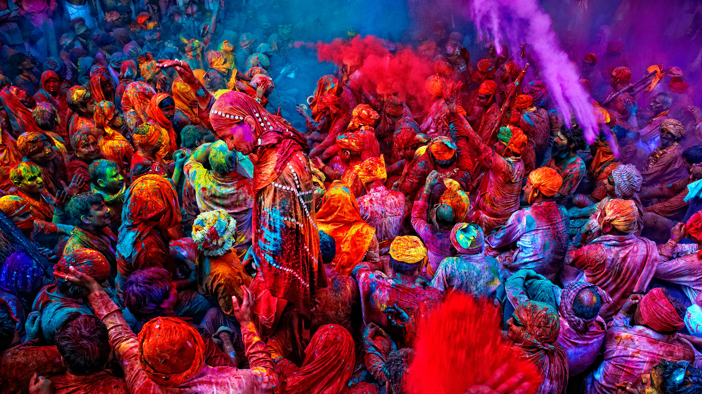
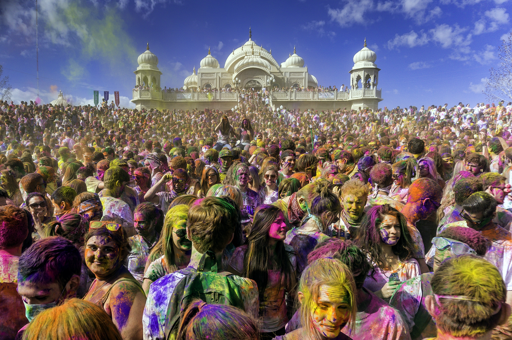
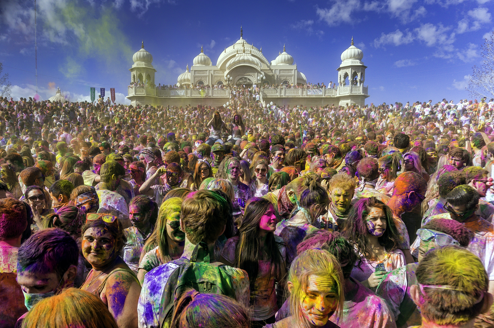

 

One of the major festivals of India, Holi is celebrated with enthusiasm and gaiety on the full moon day in the month of Phalgun which is the month of March as per the Gregorian calendar.
Holi festival may be celebrated with various names and people of different states might be following different traditions. But, what makes Holi so unique and special is the spirit of it which remains the same throughout the country and even across the globe, wherever it is celebrated.
Preparations
Entire country wears a festive look when it is time for Holi celebration. Market places get abuzz with activity as frenzied shoppers start making preparations for the festival. Heaps of various hues of gulal and abeer can be seen on the roadside days before the festival. Pichkaris in innovative and modern design too come up every year to lure the children who wish to collect them as Holi memorabilia and of course, to drench everybody in the town.Womenfolk too start making early preparations for the holi festival as they cook loads of gujiya, mathri and papri for the family and also for the relatives. At some places specially in the north women also make papads and potato chips at this time.
Season of Bloom
to Lord Krishna as an infant by feeding it poisonous milk while executing the plan of Kansa, Krishna's devil uncle. However, Krishna sucked her blood and brought her end. Some who view the origin of festivals from seasonal cycles believe that Pootana represents winter and her death the cessation and end of winter.